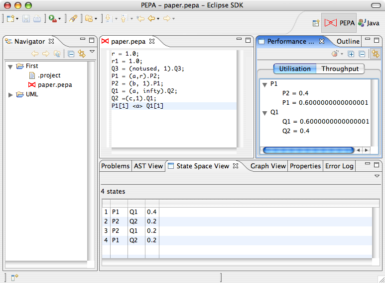

The Performance Evaluation View shows information about throughput and utilisation analysis. The view is automatically updated when the model in the active editor is solved.
The Throughput Analysis tab lists the rate at which the actions of the PEPA model are performed at steady-state. A bar plot can be obtained by right-click the list and selecting Show graph. The corresponding graph will be shown in the Graph View.

The Utilisation Analysis tab is a tree-based view showing the long-run utilisation of each top-level component of the model. For each component, it shows the percentage of time it is in a particular local state. A pie chart of a component can be obtained by right-clicking the desired component in the tree and selecting Show graph. The corresponding graph will be shown in the Graph View.
